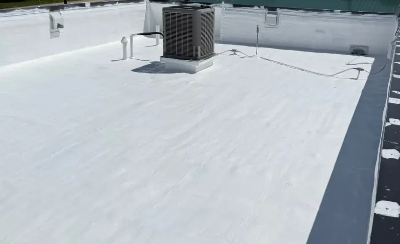

Riverton
On this Fremont County roof, the crew carried the new coating around the rooftop unit, vent pipes, and low walls.
See the flat roof before and afterWar Horse Roofing · Service area
Our crew is based in Fremont County. For a building in town or several miles out, send Wade the address and what you’ve noticed on the roof. He can confirm travel and arrange a visit.
Request a roof assessment
On this Fremont County roof, the crew carried the new coating around the rooftop unit, vent pipes, and low walls.
See the flat roof before and afterA clinic roof called for polyester fabric across the full surface, with extra reinforcement at each seam.
Explore the clinic roof systemWe’ve worked across the state line on a school in Rexburg, Idaho. If you have a building outside Wyoming, call Wade with the location so he can confirm whether the crew can take it on.